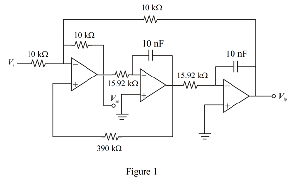

Refer to the Figure 16.24 (a) in the text book.
Write the 3 dB band width of the KHN biquad filter.
Substitute 1 kHz for  and for B.
and for B.
Refer to the Figure 16.24 (a) in the text book.
Write the 3 dB band width of the KHN biquad filter.
Substitute 1 kHz for and for B.
Determine the center frequency of the KHN biquad filter.
Substitute 1 kHz for and for C.
Assume the value of resistors as .
Determine the value of feedback resistor.
Substitute  for
for .
.
Determine the value of resistance.
Substitute  for
for and 20 for
and 20 for .
.
Therefore, the component values in the circuit are.
Determine the value of center frequency gain.
Substitute 20 for .
.
Therefore, the center frequency gain of the KHN biquad filter is.

Thus, the designed circuit is shown in Figure 1.